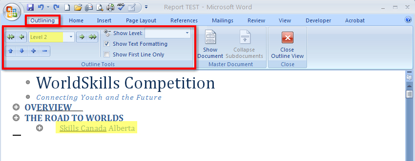
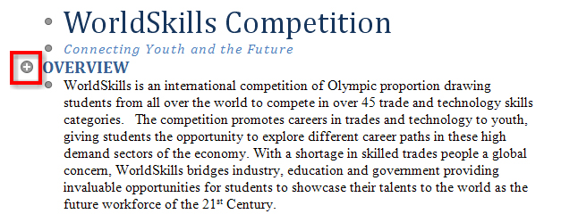
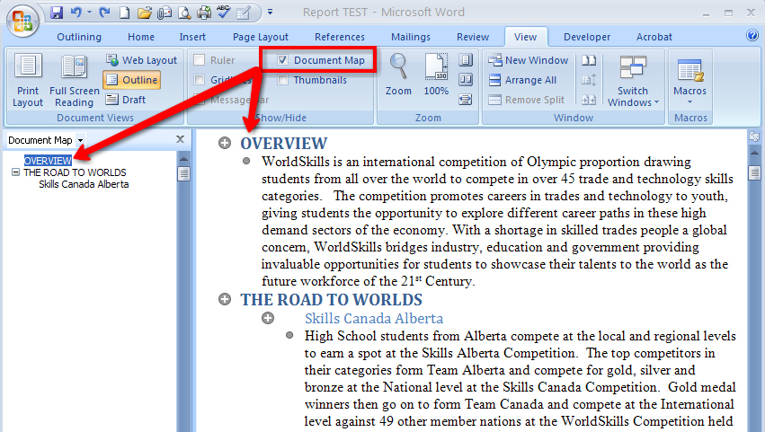
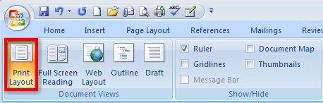
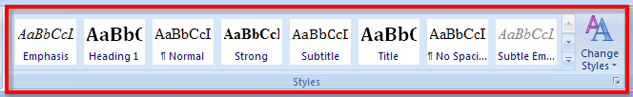

Headings and Subheadings
Well-placed, descriptive headings and subheadings help organize the body or content of a report in a logical manner, making the document easier to read. Headings highlight particular sections of the report, while subheadings are more specific to the individual ideas or topics covered in those sections. Using headings and subheadings in your report not only helps you focus your writing, but will also make your reports easier for your audience to read and understand.
Outlines and Document Maps
Use headings and subheadings to create an outline of your report. You can use the Outline view to organize your thoughts when you are ready to start the writing process, or you can use this view to manage content you have already written. It is important to note that the Outline View function is different from the Numbered or Multilevel list functions we learned about previously, and that these two functions serve different purposes and are not designed to work together.
You can access the Outline view in two ways:
When you are in the Outline view, you have access to the Outlining tab to help you control the structure of content. Headings and subheadings in your report are shown as Levels. In the Outlining tab, you can change the level of importance of your headings by using the Promote and Demote arrow buttons. There are nine levels of headings you can use. Level 1 is used for main topics or headings. Use level 2 for subheadings.

Microsoft product screen shot(s) reprinted with permission from Microsoft Corporation.
The content of your report is called the Body Text. You can show or hide the content of your report by clicking the + button in the margin to expand or collapse the body text.

Microsoft product screen shot(s) reprinted with permission from Microsoft Corporation.
Go to the Instructional Videos and watch “The Outline View” to see how the Outline view works.
When you are in the View tab on the ribbon, you can also access the Document Map. This tool helps you navigate lengthy documents by displaying an outline of the headings used in a document in a separate window pane. When you click on a heading in the Document Map window, Microsoft Word jumps to that heading in your document.

Microsoft product screen shot(s) reprinted with permission from Microsoft Corporation.
You can use the Outline view and the Document Map to easily move and rearrange the content in your report to really speed up document editing: simply select the heading and drag it to a new location in the report.
When your document is in the Print Layout view, you can manage and format the content of your report quickly and easily using Styles. The Print Layout View button is in the bottom right-hand corner of the screen, or in the Document Views in the View tab on the ribbon.
Microsoft product screen shot(s) reprinted with permission from Microsoft Corporation.

Microsoft product screen shot(s) reprinted with permission from Microsoft Corporation.
Located in the Home tab, the Styles group helps you build your documents quickly with galleries of coordinating Titles, Headings, and Subheadings designed with document structure and formatting in mind.

Microsoft product screen shot(s) reprinted with permission from Microsoft Corporation.
Each Quick Style found in the Style Gallery is a preset collection of formatting settings, such as font, colour, and size, that you can apply with one click. Quick Styles help you build reports using the proper components, such titles and headings, while making formatting faster, easier, and more consistent (the same formatting characteristics are applied each time you apply the style). You can even create your own style and save it to the Quick Style gallery.
Go to the Instructional Videos and watch “Styles Group” to see how easy it is to use the Styles feature to create a properly structured and professionally formatted report.
Now go to the Instructional Videos and watch “Style Set, Colour, and Font Changes” to see how quickly you can change the entire look of a document using Styles.
If you need more information about the styles used in your document, you can use the Styles dialog box launcher to bring up the Style pane. Go to the Instructional Videos and watch “Style Pane” to see how to access and use the Style pane to see the formatting in a document.
Now that you have done your writing and applied styles to your document, it is time to adjust the layout of the report and add items such as references, title pages, and page numbering to complete your project.